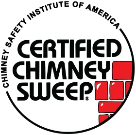

831+
Safety InspectionsKeeping Austin homes safe from roof leaks, cracked masonry, chimney fires, and venting problems with fast, friendly local service.

831+
Safety Inspections3,894
Fires & Leaks Prevented1,478
Chimney Cleanings874
Repairs & RebuildsFrom the first inspection to the final walkthrough, our process is built around clear findings, photo documentation, practical recommendations, and work you approve before it begins.
Similar chimney and venting symptoms can come from different causes. We inspect the relevant areas, document what we see, and explain the recommended next step before approved work begins.
A straightforward process designed to keep you informed at every stage of the service visit.
Book online or call us. Tell us what you noticed and which service you may need so we can start with the right context.
The technician reviews the relevant chimney, fireplace, masonry, duct, or venting area and documents the condition.
We explain what we found in clear language and walk through the service options that fit the condition of the system.
The scope is confirmed before approved cleaning, repair, installation, or maintenance work begins.
We complete the approved service, clean the work area, and review the finished work and any relevant next steps with you.
Simple, reliable solutions to protect your home from Texas weather and keep your family comfortable.
Find and repair common chimney water-entry points before moisture causes more damage inside or around the home.
Explore Leak RepairRepair damaged crowns and caps that help keep rain, debris, and animals from entering the chimney system.
Explore Crown & Cap RepairCheck accessible chimney and fireplace areas for buildup, visible damage, water entry, and venting concerns.
Schedule an InspectionRemove soot, creosote, and loose debris from serviceable chimney areas to help keep the flue cleaner and ready for use.
Explore Chimney SweepingClear lint and buildup from accessible dryer vent lines to support better airflow and safer dryer operation.
Explore Dryer Vent CleaningAddress accessible nests, animals, and related chimney blockages, then review options that can help reduce repeat entry.
Get Help With Animal RemovalRepair vulnerable flashing areas and seal suitable masonry surfaces to help reduce water intrusion around the chimney.
Explore Flashing & SealingGet help with gas log and fireplace service needs, visible issues, setup concerns, and general fireplace performance.
Explore Gas Logs & FireplacesClear explanations make it easier to understand leaks, creosote buildup, and the type of chimney inspection your home may need.
Austin heat, heavy rain, temperature swings, and occasional freezes can expose small weaknesses around brick, mortar, flashing, crowns, caps, and metal chase covers. The visible stain inside the home is often only the final symptom.
Water can enter small mortar cracks. When temperatures drop hard enough to freeze trapped moisture, those cracks can widen and the masonry surface can begin to flake or spall.
Some older brick found around areas such as Hyde Park and Tarrytown can absorb water like a sponge. Saturated masonry can carry moisture inward even when no single large crack is visible.
On many newer factory-built chimney systems, a metal chase cover protects the top. Rust, failed seams, or poor drainage can let water into the framed chase and surrounding finishes.
Creosote is combustible residue created by wood-burning fires. Its texture can change as buildup becomes denser, which also changes how difficult it is to remove safely.
| Stage | What It Looks Like | Fire Risk | Typical Cleaning Approach |
|---|---|---|---|
| Stage 1 | Dry and powdery Light soot-like residue that is usually loose compared with later stages. | Still combustible. Routine removal helps keep buildup from becoming thicker and harder to clean. | Often removed with standard professional chimney brushing and vacuum-controlled cleaning. |
| Stage 2 | Flaky, crunchy or tar-like Denser deposits can cling more tightly to the flue surface. | More difficult to remove and still combustible, especially when deposits continue to accumulate. | May require powered rotary tools or other professional methods selected for the flue and buildup condition. |
| Stage 3 | Hard, dark and glazed Dense shiny deposits can look almost like hardened tar or glass. | Glazed creosote is a serious fire concern and can be difficult to remove without specialized treatment. | Requires professional evaluation and specialized removal. Any heat or flue damage found should be addressed before continued use. |
A Level 1 inspection is the routine starting point for an unchanged, regularly used system. A Level 2 inspection adds a deeper review when hidden conditions or a change in the system needs to be evaluated.
Best suited to a chimney or fireplace that is being used normally with no known major change, damage event, or suspected hidden problem.
Used when a deeper look is appropriate, such as after a system change, property transfer, possible damage, performance concern, or another condition that may not be visible from the fireplace opening.
From the first call to the final review, we keep the process clear so you know what is happening, what is recommended, and what comes next.
Tell us what you have noticed and choose a convenient appointment. We will collect the basic details before your visit.
Your technician checks the relevant chimney, fireplace, masonry, roof-line, or venting areas and documents the condition found.
We explain the findings, recommended work, and pricing before approved work begins so the scope is clear up front.
We complete the approved work, protect and clean the work area, then review the finished service and any applicable warranty details with you.
Straightforward answers to the questions Austin homeowners ask most about chimney cleaning, inspections, leaks, fireplaces, and dryer vents.
Most homeowners should have the chimney inspected every year and cleaned when soot or creosote buildup is present. How often you need sweeping depends on how frequently you burn fires, the fuel you use, and the condition of the flue and fireplace system.
A typical chimney sweeping appointment may cost about $99 to $300. The final price can vary with chimney height, access, buildup, fireplace type, and whether inspection or additional cleaning is needed. A clear estimate should explain what is included before work begins.
Common warning signs include water stains near the fireplace, damp odors, peeling paint, rust on the damper or firebox, cracked mortar, white staining on brick, or visible moisture after rain. Chimney leaks can come from flashing, crowns, caps, masonry, or chase covers.
Yes. Creosote is a combustible residue created by wood smoke. Heavy buildup can restrict airflow and increase chimney-fire risk. The texture can range from loose soot to sticky or glazed deposits. A professional inspection determines whether routine sweeping or more intensive removal is appropriate.
Professional chimney sweeping should be controlled to keep soot and debris contained. Technicians typically protect the work area, use specialized vacuums and brushes, and clean the immediate space before leaving. Proper setup matters because dry soot can spread easily when the fireplace is not sealed.
A chimney inspection checks accessible fireplace, flue, masonry, crown, cap, flashing, and venting components for buildup, damage, water entry, or safety concerns. The exact scope depends on the inspection level. Findings should be explained clearly before any cleaning, repair, or additional work is recommended.
A Level 1 inspection is a standard visual check of readily accessible areas when the system has not changed. A Level 2 inspection is more detailed and commonly includes a video scan of the flue when there are changes, damage concerns, property transfers, or certain events.
Yes. Ongoing chimney leaks can damage mortar, brick, ceilings, framing, insulation, fireplace components, and nearby finishes. Moisture may also cause rust or staining. Finding the entry point early helps limit secondary damage and determines whether flashing, sealing, masonry, crown, cap, or chase-cover work is needed.
Yes. Birds, squirrels, raccoons, and other animals may enter through an open or damaged chimney top. Nests and debris can interfere with venting and create odors. After safe removal, the chimney should be checked for blockage or damage and an appropriate cap may help prevent re-entry.
Many homes benefit from dryer vent cleaning about once a year, but the right interval depends on laundry volume, vent length, bends, and how quickly lint accumulates. Large households or long vent runs may need more frequent service, especially when drying time begins increasing.
Watch for clothes taking longer to dry, the dryer or laundry room feeling unusually hot, a burning or dusty smell, excess lint around the machine, or weak airflow at the exterior vent. Reduced airflow makes the dryer work harder and is a reason to inspect the vent path.
Yes. Gas systems burn cleaner than wood, but the fireplace, venting, burner components, and surrounding chimney can still develop problems. An inspection can identify venting concerns, deterioration, debris, water damage, or component issues so the system can be serviced appropriately before regular use.
Find Chimney Star service information for Austin and nearby Central Texas communities. Explore your local area page for chimney, fireplace, venting, leak, and maintenance guidance close to home.